stock_price gold_price
1 3.230426 9.402434
2 2.992937 8.987918
3 2.194025 10.120387
4 2.602475 9.367327
5 2.963497 8.708742
6 4.224242 8.494215
7 7.433981 8.739684
8 5.060836 8.609681
9 3.903316 7.552746
10 4.260542 9.834538
11 3.469490 9.406449
12 2.948513 10.622398
13 3.354562 13.120620
14 3.930106 15.050968
15 3.693491 13.399324
16 3.076129 15.349677
17 2.934277 14.839097
18 2.658664 16.018502
19 2.450606 17.259515
20 2.489758 18.262699
21 2.591093 18.131039
22 2.520801 20.200525
23 2.471447 24.137667
24 2.062430 30.076947
25 1.805153 35.694847
26 1.673950 39.296579
27 1.620848 39.523171
28 1.547374 36.125635
29 1.721679 31.011062
30 1.974891 29.608098
31 2.168978 35.005929
32 2.277215 37.629288
33 2.993353 41.458284Statistical Models
Lecture 10
Lecture 10:
Practical regression
Outline of Lecture 10
- Plotting variables in R
- Cross-check formal statistical results with graphical analyses
- Important in practical research work
- Coefficient of determination R^2
- R^2 measures proportion of variability in the data explained by the model
- R^2 close to 1 is good result
- Any R^2 larger than 0.3 is potentially worthwhile
Outline of Lecture 10
- t-test for regression
- Test the significance of individual parameters
- F-test for regression
- Test the overall significance of the parameters
Outline of Lecture 10
- The Longley dataset
- Well-known vintage regression example
- Model selection
- Comparison of nested regression models
- Examples of model selection
Part 1:
Plotting variables in R
Plotting variables in R
Interested in relationship between 2 variables
Want to plot the 2 variables together
Cross-check the results of a formal statistical analysis
Very important in real project work
Example: Stock and Gold prices
Dataset with 33 entries for Stock and Gold price pairs
|
|
|
Example: Stock and Gold prices
The data is stored in a
.txtfileThe file can be downloaded here stock_gold.txt
- The text file looks like this 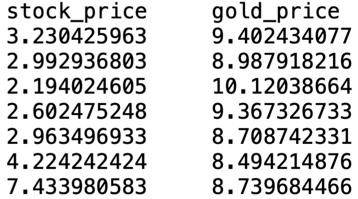
- Remarks:
- There is a Header
- 1st column lists Stock Price
- 2nd column lists Gold Price
Reading data into R
To read stock_gold.txt into R proceed as follows:
Download stock_gold.txt and move file to Desktop
Open the R Console and change working directory to Desktop
Reading data into R
- Read
stock_gold.txtinto R and store it in data-framepriceswith code
Note: We are telling read.table() that
stock_gold.txthas a header- Headers are optional
- Headers are good practice to describe data
Reading data into R
- For safety, let us check we loaded the correct data file
Store data into vectors
- We now store Stock and Gold prices in 2 vectors
- Stock prices are in 1st column of
prices - Gold prices are in 2nd column of
prices
- Stock prices are in 1st column of
- Alternatively the same can be achieved with
Plot Stock Price vs Gold Price
Plot Stock Price vs Gold Price
xlabandylabspecify axes labelspchspecifies type of pointsScaling is achieved with
xlim = c(lower, upper)ylim = c(lower, upper)

Examining the graph
Graph suggests that the 2 variables are negatively correlated
Need to cross-check with the results of a formal statistical regression analysis

Part 2:
Coefficient of
determination R^2
Coefficient of determination R^2
- R^2 is defined as
R^2 = \frac{ \mathop{\mathrm{ESS}}}{ \mathop{\mathrm{TSS}}} = 1 - \frac{ \mathop{\mathrm{RSS}}}{ \mathop{\mathrm{TSS}}}
- R^2 measures proportion of variability in the data explained by the model
Important
- R^2 is automatically computed by R when using
lm - High values of R^2 are better!
Some observations about R^2
Warning
R^2 increases as more X variables are added to a regression model
This is not necessarily good
One can add lots of variables and make R^2 \approx 1
This way the model explains the data really well y_i \approx \hat y_i \,, \quad \forall \,\, i = 1 , \ldots, n
Problem: the model will not make good predictions on new data
This is known as overfitting and it should be avoided
Some observations about R^2
- R^2 lies between 0 and 1
- R^2 = 0 model explains nothing
- R^2 = 1 model explains everything
- Generally: the higher the value of R^2 the better the model
- Textbook examples often have high values R^2 \geq 0.7
- Example: In the Unemployment example of Lecture 9 we found R^2 = 0.8655401
Some observations about R^2
Important
In practice values
R^2 \geq 0.3
imply there is a nontrivial amount of variation in the data explained by the model
Example: In the Stock Price Vs Gold Price example we have R^2 = 0.395325
- This shows that Stock Price affects Gold Price
- Since R^2 is not too large, also other factors affect Gold Price
Running the regression in R
- The basic R command used to run regression is
lm(formula)
lmstands for linear model
Running simple linear regression in R
For simple linear regression
Y_i = \alpha + \beta x_i + \varepsilon_i
the command is
lm(y ~ x)
Symbol
y ~ xreads as y modelled as function of xyis vector containing the data y_1, \ldots, y_nxis vector containing the data x_1, \ldots, x_n
Running multiple linear regression in R
For multiple linear regression
Y_i = \beta_1 + \beta_2 \, x_{i2} + \ldots + \beta_p \, x_{ip} + \varepsilon_i
the command is
lm (y ~ x2 + x3 + ... + xp)
yis vector containing the data y_1, \ldots, y_nxjis vector containing the data x_{1j}, \ldots , x_{jp}
Running the regression in R
The best way to run regression is
- Run the regression analysis and store the results in a variable
- Use command
summaryto read output of regression
Note: If you are running the code from .R file you need to print output
Example: Stock and Gold prices
- Stock price is stored in vector
stock.price
- Gold price is stored in vector
gold.price
- We want to fit the simple linear model \text{gold.price } = \alpha + \beta \, \times \text{ stock.price } + \text{ error}
# Fit simple linear regression model
fit.model <- lm(gold.price ~ stock.price)
# Print result to screen
summary(fit.model)- The full code can be downloaded here simple_regression.R
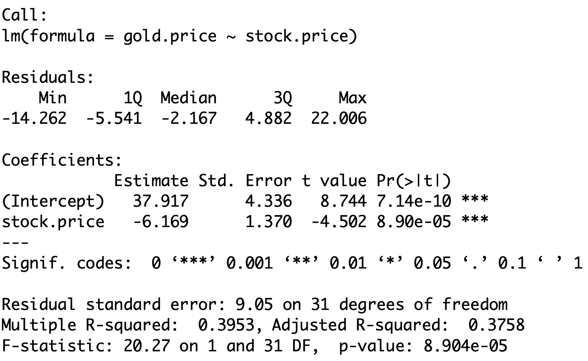
There is a lot of information here!
We will make sense of most of it in this lecture
Interesting parts of Output
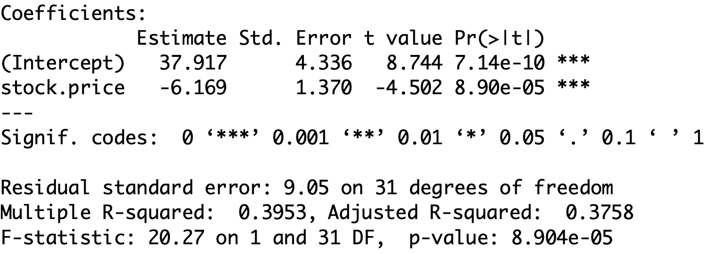
- The estimated regression coefficients are under
estimate(Intercept)refers to the coefficient \hat \alpha \qquad \implies \qquad \hat \alpha = 37.917stock.pricerefers to the coefficient \hat \beta \qquad \implies \qquad \hat \beta = - 6.169
Interesting parts of Output
- Other quantities of interest are:
| Coefficient R^2 | \texttt{Multiple R-squared: 0.3953} |
|---|---|
t-statistic for stock.price |
\texttt{stock.price t-value: -4.502} |
| F-statistic | \texttt{F-statistic: 20.27} |
Plotting the regression line

Conclusion
We fit a simple linear model to Stock Price Vs Gold Price
We obtained the regression line
{\rm I\kern-.3em E}[Y | x] = \hat \alpha + \hat \beta x = 37.917 - 6.169 \times x
- The coefficient of correlation is
R^2 = 0.395325 \geq 0.3
- Hence the linear model explains the data to a reasonable extent:
- Stock Price affects Gold Price
- Since R^2 is not too large, also other factors affect Gold Price
t-test and F-test for regression
- From
lmwe also obtained
t-statistic for stock.price |
\texttt{stock.price t-value: -4.502} |
|---|---|
| F-statistic | \texttt{F-statistic: 20.27} |
Part 3:
t-test for regression
Basic question in regression
What happens to Y as X increases?
increases?
decreases?
nothing?
Positive gradient
As X increases Y increases
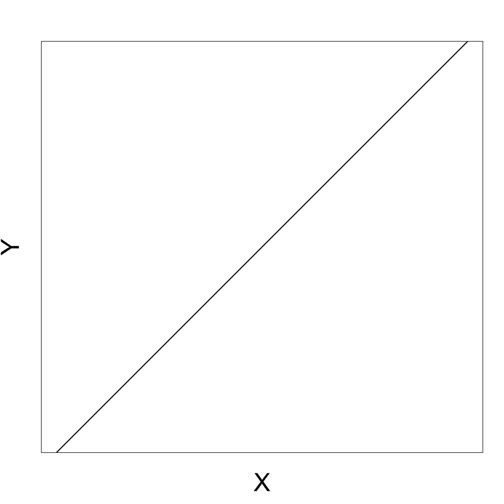Negative gradient
As X increases Y decreases

Zero gradient
Changes in X do not affect Y

t-test for simple regression
- Consider the simple linear regression model
Y_i = \alpha + \beta X_i + \varepsilon_i
- We have that
X \,\, \text{ affects } \,\, Y \qquad \iff \qquad \beta \neq 0
\beta is a random quantity which depends on the sample
Therefore we can study \beta with the hypothesis test
\begin{align*} H_0 \colon & \beta = b \\ H_1 \colon & \beta \neq b \end{align*}
Construction of t-test
- Want to test hypothesis
\begin{align*} H_0 \colon & \beta = b \\ H_1 \colon & \beta \neq b \end{align*}
Our best guess for \beta is the estimator \hat \beta
To test above hypotheses, we therefore need to
- Know the distribution of \hat \beta = \frac{ S_{xy} }{ S_{xx} }
- Construct t-statistic involving \hat \beta
Distribution of \hat \beta
Theorem
Consider the linear regression model
Y_i = \alpha + \beta x_i + \varepsilon_i
with \varepsilon_i iid N(0, \sigma^2). Then
\hat \beta \sim N \left(\beta , \frac{ \sigma^2 }{ S_{xx} } \right)
Proof: Quite difficult. If interested see Theorem 11.3.3 in [1]
Construction of the t-statistic
We want to construct t-statistic for \hat \beta
As for the standard t-test, we want a t-statistic of the form
t = \frac{\text{Estimate } - \text{ Hypothesised Value}}{\mathop{\mathrm{e.s.e.}}}
- We know that
\hat \beta \sim N \left(\beta , \frac{ \sigma^2 }{ S_{xx} } \right)
Construction of the t-statistic
- In particular \hat \beta is an unbiased estimator for \beta
{\rm I\kern-.3em E}[ \hat \beta ] = \beta
- Therefore \hat \beta is the estimate
t = \frac{\text{Estimate } - \text{ Hypothesised Value}}{\mathop{\mathrm{e.s.e.}}} = \frac{ \hat \beta - \beta }{ \mathop{\mathrm{e.s.e.}}}
Estimated Standard Error
We need to find a Standard Error for \hat \beta
We know that
{\rm Var}[\hat \beta] = \frac{ \sigma^2 }{ S_{xx}}
- Hence the standard error of \hat \beta is the standard deviation
{\rm SD}[\hat \beta] = \frac{ \sigma }{ S_{xx} }
- {\rm SD} cannot be used for testing, since \sigma^2 is unknown
Estimated Standard Error
- We however have an estimate for \sigma^2
\hat \sigma^2 = \frac{1}{n} \mathop{\mathrm{RSS}}= \frac1n \sum_{i=1}^n (y_i - \hat y_i)^2
\hat \sigma^2 was obtained from maximization of the likelihood function (Lecture 8)
It can be shown that (see Section 11.3.4 in [1])
{\rm I\kern-.3em E}[ \hat\sigma^2 ] = \frac{n-2}{n} \, \sigma^2
Estimated Standard Error
Therefore \hat\sigma^2 is not unbiased estimator of \sigma^2
We hence rescale and introduce S^2
S^2 := \frac{n}{n-2} \, \hat\sigma^2 = \frac{\mathop{\mathrm{RSS}}}{n-2}
- This way S^2 is unbiased estimator for \sigma^2
{\rm I\kern-.3em E}[S^2] = \frac{n}{n-2} \, {\rm I\kern-.3em E}[\hat\sigma^2] = \frac{n}{n-2} \, \frac{n-2}{n} \, \sigma^2 = \sigma^2
Estimated Standard Error
- Recall that the standard deviation of \hat \beta is
{\rm SD}[\hat \beta] = \frac{ \sigma }{ S_{xx} }
We replace the unknown \sigma with its unbiased estimator S
We obtain the estimated standard error
\mathop{\mathrm{e.s.e.}}= \frac{S}{\sqrt{S_{xx}}}
t-statistic to test \hat \beta
The t-statistic for \hat \beta is then
t = \frac{\text{Estimate } - \text{ Hypothesised Value}}{\mathop{\mathrm{e.s.e.}}} = \frac{ \hat \beta - \beta }{ S / \sqrt{S_{xx}} }
Theorem
Consider the linear regression model
Y_i = \alpha + \beta x_i + \varepsilon_i
with \varepsilon_i iid N(0, \sigma^2). Then
t = \frac{ \hat \beta - \beta }{ S / \sqrt{S_{xx}} } \, \sim \, t_{n-2}
How to prove the Theorem
Proof of this Theorem is quite difficult and we omit it
If you are interested in the proof, see Section 11.3.4 in [1]
The main idea is that t-statistic can be rewritten as
t = \frac{ \hat \beta - \beta }{ S / \sqrt{S_{xx}} } = \frac{ U }{ \sqrt{ V/(n-2) } }
- Here we defined
U := \frac{ \hat \beta - \beta }{ \sigma / \sqrt{S_{xx}} } \,, \qquad \quad V := \frac{ (n-2) S^2 }{ \sigma^2 }
How to prove the Theorem
- We know that
\hat \beta \sim N \left(\beta , \frac{ \sigma^2 }{ S_{xx} } \right)
- Therefore
U = \frac{ \hat \beta - \beta }{ \sigma / \sqrt{S_{xx}} } \, \sim \, N(0,1)
How to prove the Theorem
- Moreover it can be shown that
V = \frac{(n-2) S^2}{\sigma^2} \, \sim \, \chi_{n-2}^2
- It can also be shown that U and V are independent
How to prove the Theorem
- In summary, we have
t = \frac{ \hat \beta - \beta }{ S / \sqrt{S_{xx}} } = \frac{ U }{ \sqrt{ V/(n-2) } }
- U and V are independent, with
U \sim N(0,1) \,, \qquad \quad V \sim \chi_{n-2}^2
- From the Theorem on t-distribution in Lecture 3 we conclude
t \sim t_{n-2}
Summary: t-test for \beta
Goal: Estimate the slope \beta for the simple linear model
Y_i = \alpha + \beta x_i + \varepsilon_i \,, \qquad \varepsilon_i \, \text{ iid } \, N(0,\sigma^2)
Hypotheses: If b is guess for \beta the hypotheses are
\begin{align*} H_0 & \colon \beta = b \\ H_1 & \colon \beta \neq b \end{align*}
Summary: t-test for \beta
- The t-statistic is
t = \frac{\hat \beta - b }{ \mathop{\mathrm{e.s.e.}}} \, \sim \, t_{n-2} \,, \qquad \quad \mathop{\mathrm{e.s.e.}}= \frac{S }{\sqrt{S_{xx}} }
- In the above we have
\hat \beta = \frac{ S_{xy} }{ S_{xx} } \,, \qquad \quad S^2 := \frac{\mathop{\mathrm{RSS}}}{n-2}
- The p-value is
p = 2 P( t_{n-2} > |t| )
Example: Stock and Gold prices
- Recall that
- Y = Gold Price
- X = Stock Price
- We want to test if Gold Price affects Stock Price at level 0.05
- Consider the linear model Y_i = \alpha + \beta x_i + \varepsilon_i
- Test the hypotheses \begin{align*} H_0 & \colon \beta = 0 \\ H_1 & \colon \beta \neq 0 \end{align*}
Testing for \beta = 0
- Recall that Stock Prices and Gold Prices are stored in R vectors
stock.pricegold.price
- Fit the simple linear model with the following commands
\text{gold.price } = \alpha + \beta \, \times \text{ stock.price } + \text{ error}
Output: \mathop{\mathrm{e.s.e.}}, t-statistic, p-value
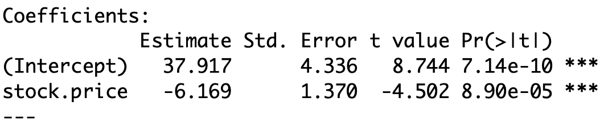
\texttt{(Intercept)}: 1st row of the table contains statistics related to \hat \alpha
\texttt{stock.price}: 2nd row of the table contains statistics related to \hat \beta
- For larger models there will be additional rows below the 2nd
- These will be informative about additional regression parameters
Output: \mathop{\mathrm{e.s.e.}}, t-statistic, p-value
- The 2nd row of the table has to be interpreted as follows
| \texttt{Estimate} | \text{The value of } \hat \beta |
|---|---|
| \texttt{Std. Error} | Estimated standard error \mathop{\mathrm{e.s.e.}} for \beta |
| \texttt{t value} | t-statistic \, t = \dfrac{\hat \beta - 0 }{\mathop{\mathrm{e.s.e.}}} |
| \texttt{Pr(>|t|)} | p-value \, p = 2 P( t_{n-2} > |t| ) |
| \texttt{*}, \, \texttt{**}, \, \texttt{***}, \, \texttt{.} | Statistical significance – More stars is better |
Output: \mathop{\mathrm{e.s.e.}}, t-statistic, p-value
- The above table then gives
\hat \beta = -6.169 \,, \qquad \mathop{\mathrm{e.s.e.}}= 1.37 \, , \qquad t = - 4.502 \,, \qquad p = 8.9 \times 10^{-5} \
- The t-statistic computed by R can also be computed by hand
t = \frac{\hat \beta - 0}{ \mathop{\mathrm{e.s.e.}}} = \frac{-6.169}{1.37} = -4.502
Output: \mathop{\mathrm{e.s.e.}}, t-statistic, p-value
The p-value cannot be computed by hand
However we can find critical value in Table 1
n = \text{No. of data points} = 33 \,, \qquad \text{df} = n - 2 = 31
- Critical value is \, t_{31}(0.025) = 2.040
|t| = 4.502 > 2.040 = t_{31}(0.025) \quad \implies \quad p < 0.05
Output: \mathop{\mathrm{e.s.e.}}, t-statistic, p-value
Interpretation: \, p is very small (hence the \, \texttt{***} \, rating)
Therefore we reject the null hypothesis H_0 and the real parameter is \beta \neq 0
Since \beta \neq 0 we have that Stock Prices affect Gold Prices
The best estimate for \beta is \hat \beta = -6.169
\hat \beta < 0 and statistically significant:
\,\, As Stock Prices increase Gold Prices decrease
Warning
t-statistic in summary refers to two-sided t-test of whether a coefficient is 0
If b = 0 or one-sided t-test is required
- Compute t-statistic by hand t = \frac{\hat \beta - b}{\mathop{\mathrm{e.s.e.}}}
- \, \mathop{\mathrm{e.s.e.}} is in the 2nd row under \,\, \texttt{Std. Error}
- Compute p-value by hand with \,\, \texttt{pt(t, df)}
t-test for general regression
- Consider the general linear regression model
Y_i = \beta_1 z_{i1} + \ldots + \beta_{ip} z_{ip} + \varepsilon_i \,, \qquad \varepsilon_i \, \text{ iid } \, N(0, \sigma^2)
- We have that
Z_j \,\, \text{ affects } \,\, Y \qquad \iff \qquad \beta_j \neq 0
- To see if Z_j affects Y we need to test the hypothesis
\begin{align*} H_0 \colon & \beta_j = b_j \\ H_1 \colon & \beta_j \neq b_j \end{align*}
Distribution of estimator \hat \beta
- The estimator for the general model is
\hat \beta = (Z^T Z)^{-1} Z^T y
- It can be proven that (see Section 11.5 in [2])
\hat \beta_j \sim N \left( \beta_j , \xi_{jj} \sigma^2 \right)
- The numbers \xi_{jj} are the diagonal entries of the p \times p matrix
(Z^T Z)^{-1} = \left( \begin{array}{ccc} \xi_{11} & \ldots & \xi_{1p} \\ \ldots & \ldots & \ldots \\ \xi_{p1} & \ldots & \xi_{pp} \\ \end{array} \right)
Construction of the t-statistic
- In particular \hat \beta_j is an unbiased estimator for \beta_j
{\rm I\kern-.3em E}[ \hat \beta_j ] = \beta_j
- Therefore the t-statistic for \hat \beta_j is
t = \frac{\text{Estimate } - \text{ Hypothesised Value}}{\mathop{\mathrm{e.s.e.}}} = \frac{ \hat \beta_j - \beta_j }{ \mathop{\mathrm{e.s.e.}}}
Estimated Standard Error
We need to find a Standard Error for \hat \beta_j
We know that
{\rm Var}[\hat \beta_j] = \xi_{jj} \, \sigma^2
- Hence the standard error of \hat \beta_j is the standard deviation
{\rm SD}[\hat \beta_j] = \xi_{jj}^{1/2} \, \sigma
- {\rm SD} cannot be used for testing, since \sigma^2 is unknown
Estimated Standard Error
- We however have an estimate for \sigma^2
\hat \sigma^2 = \frac{1}{n} \mathop{\mathrm{RSS}}= \frac1n \sum_{i=1}^n (y_i - \hat y_i)^2
\hat \sigma^2 was obtained from maximization of the likelihood function (Lecture 9)
It can be shown that (see Section 11.5 in [2])
{\rm I\kern-.3em E}[ \hat\sigma^2 ] = \frac{n-p}{n} \, \sigma^2
Estimated Standard Error
Therefore \hat\sigma^2 is not unbiased estimator of \sigma^2
We hence rescale and introduce S^2
S^2 := \frac{n}{n-p} \, \hat\sigma^2 = \frac{\mathop{\mathrm{RSS}}}{n-p}
- This way S^2 is unbiased estimator for \sigma^2
{\rm I\kern-.3em E}[S^2] = \frac{n}{n-p} \, {\rm I\kern-.3em E}[\hat\sigma^2] = \frac{n}{n-p} \, \frac{n-p}{n} \, \sigma^2 = \sigma^2
Estimated Standard Error
- Recall that the standard deviation of \hat \beta is
{\rm SD}[\hat \beta] = \xi_{jj}^{1/2} \, \sigma
We replace the unknown \sigma with its unbiased estimator S
We obtain the estimated standard error
\mathop{\mathrm{e.s.e.}}=\xi_{jj}^{1/2} \, S
t-statistic to test \beta_j
Theorem
Consider the general linear regression model
Y_i = \beta_1 z_{i1} + \ldots +\beta_p z_{ip} + \varepsilon_i
with \varepsilon_i iid N(0, \sigma^2). Then
t = \frac{\text{Estimate } - \text{ Hypothesised Value}}{\mathop{\mathrm{e.s.e.}}} = \frac{ \hat \beta_j - \beta_j }{ \xi_{jj}^{1/2} \, S} \, \sim \, t_{n-p}
Proof: See section 11.5 in [2]
Summary: t-test for \beta_j
Goal: Estimate the coefficient \beta_j for the general linear model
Y_i = \beta_1 z_{i1} + \ldots + \beta_p z_{ip} + \varepsilon_i \,, \qquad \varepsilon_i \, \text{ iid } \, N(0,\sigma^2)
Hypotheses: If b_j is guess for \beta_j the hypotheses are
\begin{align*} H_0 & \colon \beta_j = b_j \\ H_1 & \colon \beta_j \neq b_j \end{align*}
Summary: t-test for \beta_j
- The t-statistic is
t = \frac{\hat \beta_j - b_j }{ \mathop{\mathrm{e.s.e.}}} \, \sim \, t_{n-p} \,, \qquad \quad \mathop{\mathrm{e.s.e.}}= \xi_{jj}^{1/2} \, S
- In the above \xi_{jj} are diagonal entries of (Z^TZ)^{-1} and
\hat \beta = (Z^TZ)^{-1} Z^T y \,, \qquad \quad S^2 := \frac{\mathop{\mathrm{RSS}}}{n-p}
- The p-value is
p = 2P (t_{n-p} > |t|)
t-test in R: Fit general regression with lm
- If b_j = 0 and a two-sided t-test is required
- t-statistic is in j-th variable row under \,\, \texttt{t value}
- p-value is in j-th variable row under \,\, \texttt{Pr(>|t|)}
- If b_j \neq 0 or one-sided t-test is required
- Compute t-statistic by hand t = \frac{\hat \beta_j - b_j}{\mathop{\mathrm{e.s.e.}}}
- \,\, \hat \beta_j is in j-th variable row under \,\, \texttt{Estimate}
- \,\, \mathop{\mathrm{e.s.e.}} for \hat \beta_j is in j-th variable row under \,\, \texttt{Std. Error}
- Compute p-value by hand with \,\, \texttt{pt(t, df)}
Example: \mathop{\mathrm{e.s.e.}} for simple linear regression
- Consider the simple regression model
Y_i = \alpha + \beta x_i + \varepsilon_i
- The design matrix is
Z = \left( \begin{array}{cc} 1 & x_1 \\ \ldots & \ldots \\ 1 & x_n \\ \end{array} \right)
Example: \mathop{\mathrm{e.s.e.}} for simple linear regression
- We have seen in Lecture 9 that
(Z^T Z)^{-1} = \frac{1}{n S_{xx} } \left( \begin{array}{cc} \sum_{i=1}^n x^2_i & -n \overline{x}\\ -n\overline{x} & n \end{array} \right)
- Hence the \mathop{\mathrm{e.s.e.}} for \hat \alpha and \hat \beta are
\begin{align*} \mathop{\mathrm{e.s.e.}}(\hat \alpha) & = \xi_{11}^{1/2} \, S^2 = \sqrt{ \frac{ \sum_{i=1}^n x_i^2 }{ n S_{xx} } } \, S^2 \\[7pt] \mathop{\mathrm{e.s.e.}}(\hat \beta) & = \xi_{22}^{1/2} \, S^2 = \frac{ S^2 }{ \sqrt{ S_{xx} } } \end{align*}
- Note: \, \mathop{\mathrm{e.s.e.}}(\hat\beta) coincides with the \mathop{\mathrm{e.s.e.}} in Slide 50
Part 4:
F-test for regression
F-test for overall significance
- Want to test the overall significance of the model
Y_i = \beta_1 + \beta_2 x_{i2} + \ldots + \beta_p x_{ip} + \varepsilon_i
- This means answering the question:
\text{ Does at least one } X_i \text{ affect } Y \text{ ?}
- How to do this?
- Could perform a sequence of t-tests on the \beta_j
- For statistical reasons this is not really desirable
- To assess overall significance we can perform F-test
F-test for overall significance
The F-test for overall significance has 3 steps:
Define a larger full model (with more parameters)
Define a smaller nested reduced model (with fewer parameters)
Use an F-statistic to decide between larger or smaller model
Overall significance for multiple regression
- Model 1 is the smaller reduced model
- Model 2 is the larger full model
\begin{align*} \textbf{Model 1:} & \quad Y_i = \beta_1 + \varepsilon_i \\[15pt] \textbf{Model 2:} & \quad Y_i = \beta_1 + \beta_2 x_{i2} + \ldots + \beta_p x_{ip} + \varepsilon_i \end{align*}
- Choosing the smaller Model 1 is equivalent to accepting H_0
\begin{align*} H_0 & \colon \, \beta_2 = \beta_3 = \ldots = \beta_p = 0 \\ H_1 & \colon \text{ At least one of the } \beta_i \text{ is non-zero} \end{align*}
Overall significance for simple regression
- Model 1 is the smaller reduced model
- Model 2 is the larger full model
\begin{align*} \textbf{Model 1:} & \quad Y_i = \alpha + \varepsilon_i \\[15pt] \textbf{Model 2:} & \quad Y_i = \alpha + \beta x_i + \varepsilon_i \end{align*}
- Choosing the smaller Model 1 is equivalent to accepting H_0
\begin{align*} H_0 & \colon \beta = 0 \\ H_1 & \colon \beta \neq 0 \end{align*}
Construction of F-statistic
- Consider the full model with p parameters
\textbf{Model 2:} \quad Y_i = \beta_1 + \beta_2 x_{i2} + \ldots + \beta_p x_{ip} + \varepsilon_i
- Predictions for the full model are
\hat y_i := \beta_1 + \beta_2 x_{i2} + \ldots + \beta_p x_{ip}
- Define the residual sum of squares for the full model
\mathop{\mathrm{RSS}}(p) := \sum_{i=1}^n (y_i - \hat y_i)^2
Construction of F-statistic
- Consider now the reduced model
\textbf{Model 1:} \quad Y_i = \beta_1 + \varepsilon_i
- Predictions of the reduced model are constant
\hat y_i = \beta_1
- Define the residual sum of squares for the full model
\mathop{\mathrm{RSS}}(1) := \sum_{i=1}^n (y_i - \beta_1)^2
Construction of F-statistic
Suppose the parameters of the full model \beta_2, \ldots, \beta_p are not important
In this case the predictions of full and reduced model will be similar
Therefore the \mathop{\mathrm{RSS}} for the 2 models are similar
\mathop{\mathrm{RSS}}(1) \, \approx \, \mathop{\mathrm{RSS}}(p)
Construction of F-statistic
- Recall that \mathop{\mathrm{RSS}} is defined via minimization
\mathop{\mathrm{RSS}}(k) := \min_{\beta_1 , \ldots , \beta_k} \ \sum_{i=1}^n ( y_i - \hat y_i)^2 \,, \qquad \hat y_i := \beta_1 + \beta_2 x_{i2} + \ldots + \beta_k x_{ik}
- Therefore \mathop{\mathrm{RSS}} cannot increase if we add parameters to the model
\mathop{\mathrm{RSS}}(1) \geq \mathop{\mathrm{RSS}}(p)
- To measure how influential the parameters \beta_2, \ldots, \beta_p are, we study
\frac{\mathop{\mathrm{RSS}}(1) - \mathop{\mathrm{RSS}}(p)}{\mathop{\mathrm{RSS}}(p)}
Construction of F-statistic
- We now suitably rescale
\frac{\mathop{\mathrm{RSS}}(1) - \mathop{\mathrm{RSS}}(p)}{\mathop{\mathrm{RSS}}(p)}
- To this end, note that the degrees of freedom of reduced model are
\mathop{\mathrm{df}}(1) = n - 1
- The degrees of freedom of the full model are
\mathop{\mathrm{df}}(p) = n - p
F-statistic for overall significance
Definition
The F-statistic for overall significance is
\begin{align*} F & := \frac{\mathop{\mathrm{RSS}}(1) - \mathop{\mathrm{RSS}}(p)}{ \mathop{\mathrm{df}}(1) - \mathop{\mathrm{df}}(p) } \bigg/ \frac{\mathop{\mathrm{RSS}}(p)}{\mathop{\mathrm{df}}(p)} \\[15pt] & = \frac{\mathop{\mathrm{RSS}}(1) - \mathop{\mathrm{RSS}}(p)}{ p - 1 } \bigg/ \frac{\mathop{\mathrm{RSS}}(p)}{n - p} \end{align*}
Theorem: The F-statistic for overall significance has F-distribution
F \, \sim \, F_{p-1,n-p}
Rewriting the F-statistic
Proposition
The F-statistic can be rewritten as
\begin{align*} F & = \frac{\mathop{\mathrm{RSS}}(1) - \mathop{\mathrm{RSS}}(p)}{ p - 1 } \bigg/ \frac{\mathop{\mathrm{RSS}}(p)}{n - p} \\[15pt] & = \frac{R^2}{1 - R^2} \, \cdot \, \frac{n - p}{p - 1} \end{align*}
Proof of Proposition
- Notice that \mathop{\mathrm{TSS}} does not depend on p since
\mathop{\mathrm{TSS}}= \sum_{i=1}^n (y_i - \overline{y})^2
- Recall the definition of R^2
R^2 = 1 - \frac{\mathop{\mathrm{RSS}}(p)}{\mathop{\mathrm{TSS}}}
- From the above we obtain
\mathop{\mathrm{RSS}}(p) = (1 - R^2) \mathop{\mathrm{TSS}}
Proof of Proposition
- By definition we have that
\mathop{\mathrm{RSS}}(1) = \min_{\beta_1} \ \sum_{i=1}^n (y_i - \beta_1)^2
- Exercise: Check that the unique solution to the above problem is
\beta_1 = \overline{y}
- Therefore we have
\mathop{\mathrm{RSS}}(1) = \sum_{i=1}^n (y_i - \overline{y})^2 = \mathop{\mathrm{TSS}}
Proof of Proposition
- We just obtained the two identities
\mathop{\mathrm{RSS}}(p) = (1 - R^2) \mathop{\mathrm{TSS}}\,, \qquad \quad \mathop{\mathrm{RSS}}(1) = \mathop{\mathrm{TSS}}
- From the above we conclude the proof
\begin{align*} F & = \frac{\mathop{\mathrm{RSS}}(1) - \mathop{\mathrm{RSS}}(p)}{ p - 1 } \bigg/ \frac{\mathop{\mathrm{RSS}}(p)}{n - p} \\[15pt] & = \frac{\mathop{\mathrm{TSS}}- (1 - R^2) \mathop{\mathrm{TSS}}}{ p - 1 } \bigg/ \frac{(1 - R^2) \mathop{\mathrm{TSS}}}{n - p}\\[15pt] & = \frac{R^2}{1 - R^2} \, \cdot \, \frac{n - p}{p - 1} \end{align*}
F-statistic for simple regression
Proposition
The F-statistic for overall significance in simple regression is F = t^2 \,, \qquad \quad t = \frac{\hat \beta}{ S / \sqrt{S_{xx}}} where t is the t-statistic for \hat \beta.
In particular the p-values for t-test and F-test coincide p = P( t_{n-2} > |t| ) = P( F_{1,n-2} > F )
Proof: Will be left as an exercise
Summary: F-test for overall significance
Goal: Test the overall significance of the model
Y_i = \beta_1 + \beta_2 x_{i2} + \ldots + \beta_p x_{ip} + \varepsilon_i
This means answering the question:
\text{ Does at least one } X_i \text{ affect } Y \text{ ?}
Hypotheses: The above question is equivalent to testing
\begin{align*} H_0 & \colon \, \beta_2 = \beta_3 = \ldots = \beta_p = 0 \\ H_1 & \colon \text{ At least one of the } \beta_i \text{ is non-zero} \end{align*}
Summary: F-test for overall significance
- F-statistic is
\begin{align*} F & = \frac{\mathop{\mathrm{RSS}}(1) - \mathop{\mathrm{RSS}}(p)}{ p - 1 } \bigg/ \frac{\mathop{\mathrm{RSS}}(p)}{n - p} \\[15pt] & = \frac{R^2}{1 - R^2} \, \cdot \, \frac{n - p}{p - 1} \end{align*}
- Distribution of F is
F \, \sim \, F_{p-1,n-p}
Summary: F-test for overall significance
- The p-value is
p = P ( F_{p-1,n-2} > F)
- F-test in R:
- Fit the multiple regression model with
lm - F-statistic is listed in the summary
- p-value is listed in the summary
- Fit the multiple regression model with
Example: Stock and Gold prices
Recall that
- Y = Gold Price
- X = Stock Price
We want to test the overall significance of the model
Y_i = \alpha + \beta x_i + \varepsilon_i
To this end, perform F-test for the hypotheses
\begin{align*} H_0 & \colon \beta = 0 \\ H_1 & \colon \beta \neq 0 \end{align*}
F-test for overall significance
- Recall that Stock Prices and Gold Prices are stored in R vectors
stock.pricegold.price
- Fit the simple linear model with the following commands
\text{gold.price } = \alpha + \beta \, \times \text{ stock.price } + \text{ error}
Output: F-statistic and p-value
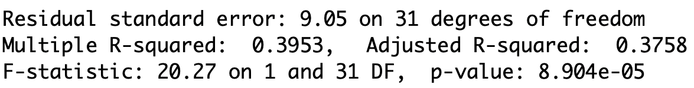
F-statistic is F = 20.27
Degrees of freedom are 1 and 31, meaning that F \, \sim \, F_{1,31}
The p-value is
p = P( F_{1,31} > F ) = 8.904 \times 10^{-5}
- Conclusion: Strong evidence (p=0.000) that Stock Price affects Gold Price
Output: F-statistic and p-value
We can also compute F-statistic by hand
From the output we see that R^2 = 0.3953
We have p = 2 and n =33
Therefore
F = \frac{ R^2 }{ 1 - R^2 } \, \cdot \, \frac{n-p}{p-1} = \frac{0.395325}{0.604675} \, \cdot \, \frac{31}{1} = 20.267
Output: F-statistic and p-value
The p-value cannot be computed by hand
However we can find critical values close to F_{1,31} (0.05) in Table 3
F_{1, 30} (0.05) = 4.17 \,, \qquad \quad F_{1, 40} (0.05) = 4.08
Output: F-statistic and p-value
- We can approximate F_{1,31} (0.05) by averaging the found values
F_{1,31}(0.05) \, \approx \, \frac{F_{1, 30} (0.05) + F_{1, 40} (0.05)}{2} = 4.125
- We reject H_0 since
F = 20.267 > 4.125 = F_{1,31}(0.05) \quad \implies \quad p < 0.05
Part 5:
The Longley dataset
Longley dataset
GNP Unemployed Armed.Forces Population Year Employed
1 234.289 235.6 159.0 107.608 1947 60.323
2 259.426 232.5 145.6 108.632 1948 61.122
3 258.054 368.2 161.6 109.773 1949 60.171Goal: Explain the number of Employed people Y in the US in terms of
- X_2 GNP Gross National Product
- X_3 number of Unemployed
- X_4 number of people in the Armed Forces
- X_5 non-institutionalised Population \geq age 14 (not in care of insitutions)
- X_6 Years from 1947 to 1962
R commands for reading in the data
Longley dataset available here longley.txt
Download the file and place it in current working directory
R commands for fitting multiple regression
- We want to fit the multiple regression model
Y = \beta_1 + \beta_2 \, X_2 + \beta_3 \, X_3 + \beta_4 \, X_4 + \beta_5 \, X_5 + \beta_6 \, X_6 + \varepsilon
# Fit multiple regression model
model <- lm(y ~ x2 + x3 + x4 + x5 + x6)
# Print summary
summary(model)- Full code can be downloaded here longley_regression.R
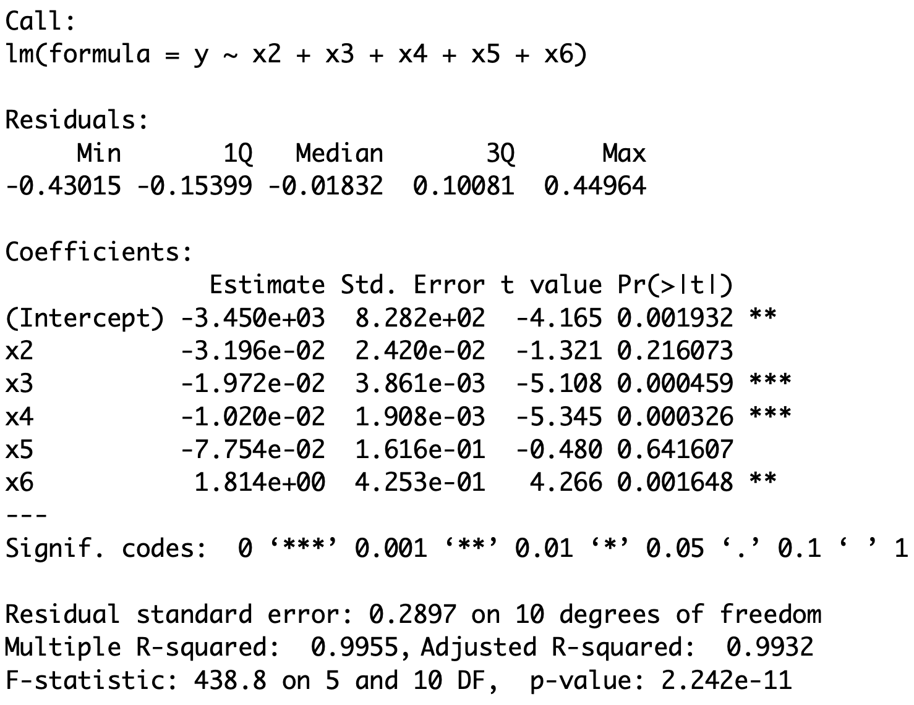
Interpreting R output
We are interested in the following information
The R^2 statistic
The individual t-statistics
The F-statistic to assess overall significance
The R^2 statistic
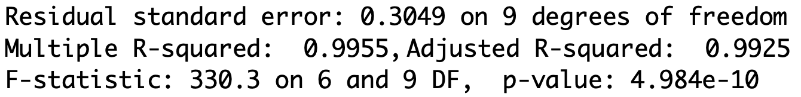
We have that R^2=0.9955
R^2 is very high which suggests we might have quite a good model
This means the model explains around 99.6% of the variability in the data
There is a chance R^2 is too high to be true (see later)
The individual t-statistics
Look at p-values for each variable X_j
Recall: Such p-values refer to the two-sided t-test
H_0 \colon \, \beta_j = 0 \qquad \quad H_1 \colon \, \beta_j \neq 0
- Find X_j for which p < 0.05
- For X_j we reject H_0
- Therefore \beta_j \neq 0
- Hence X_j influences Y
- X_j is statistically significant
- In dissertations p < 0.1 is OK
- Weak evidence against H_0
- X_j has some weak effect on Y
The individual t-statistics
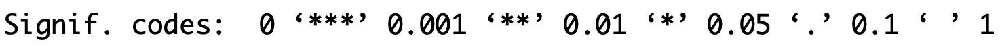
- Stars in output help you find the significant p-values
| Significance code | p-value | Coefficient |
|---|---|---|
| No stars | 0.1 \leq p \leq 1 | \beta_j = 0 |
| \texttt{.} | 0.05 \leq p < 0.1 | \beta_j = 0 |
| \texttt{*} | 0.1 \leq p < 0.05 | \beta_j \neq 0 |
| \texttt{**} | 0.001 \leq p < 0.01 | \beta_j \neq 0 |
| \texttt{***} | p < 0.001 | \beta_j \neq 0 |
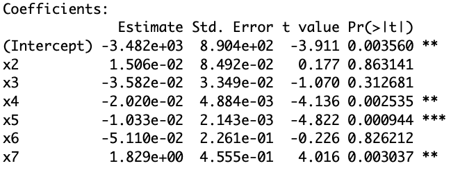
Interpretation: Not all variables are statistically significant
- This is because some variables have no stars
- Significant variables have at least one star
- Intercept has two stars \, \texttt{**} and hence is significant
- The p-value is p = 0.001932
- Since p < 0.05 we conclude that the real intercept is \beta_1 \neq 0
- Estimated intercept is \hat \beta_1 = -3.45 \times 10^{3}
- X_2 and X_5 have no stars
- p-values are p \geq 0.1 and therefore \beta_2 = \beta_5 = 0
- Notice that the estimates \hat \beta_2 and \hat \beta_5 are not zero
- However these estimates have to be ignored due to t-test
- X_2 and X_5 have no effect on Y
- Hence GNP and Non-Institutionalized do not affect Number of Employed
- X_3 has three stars \, \texttt{***} and hence is significant
- Since p<0.05 we have that \beta_3 \neq 0
- Estimated coefficient is \hat \beta_3 < 0
- Since \hat \beta_3 < 0 we have that X_3 negatively affects Y
- As the Number of Unemployed increases the Number of Employed decreases
- X_4 has three stars \, \texttt{***} and hence is significant
- Since p<0.05 we have that \beta_4 \neq 0
- Estimated coefficient is \hat \beta_4 < 0
- Therefore X_4 negatively affects Y
- As the size of Armed Forces increases the Number of Employed decreases
- X_6 has two stars \, \texttt{**} and hence is significant
- Since p<0.05 we have that \beta_6 \neq 0
- Estimated coefficient is \hat \beta_6 > 0
- Therefore X_6 positively affects Y
- Remember that X_6 is the Year
- The Number of Employed is increasing every year from 1947 to 1962
The F-statistic to assess overall significance
The F-statistic is F = 438.8 with distribution F_{5, 10}
The p-value for F-test is p = 2.242 \times 10^{-11} < 0.05
Recall: Such p-value refers to the F-test for
H_0 \colon \, \beta_2 = \ldots = \beta_6 = 0 \,, \qquad H_1 \colon \, \text{At least one } \beta_j \neq 0
Since p < 0.05 we reject H_0
There is evidence that at least one of the X-variables affects Y
Conclusions
There is evidence that at least one of the X-variables affects Y
We have seen that
- X_2 and X_5 do not affect Y
- X_3 and X_4 negatively affect Y
- X_6 positively affects Y
The R^2 statistic is really high:
- The model explains around 99.6% of the variability in the data
Part 6:
Model selection
Testing regression parameters
Summary: We have seen
- t-test
- Test the significance of individual parameters \begin{align*} H_0 & \colon \, \beta_j = 0 \\ H_1 & \colon \, \beta_j \neq 0 \end{align*}
Testing regression parameters
- F-test
- Test the overall significance of the model
- This is done by comparing two nested regression models \begin{align*} \textbf{Model 1:} & \qquad Y_ i= \beta_1 + \varepsilon_i \\[10pt] \textbf{Model 2:} & \qquad Y_ i= \beta_1 + \beta_2 x_{2, i}+ \ldots + \beta_p x_{p, i} + \varepsilon_i \end{align*}
- The comparison is achieved with F-test for \begin{align*} H_0 & \colon \, \beta_2 = \beta_3 = \ldots = \beta_p = 0 \\ H_1 & \colon \text{ At least one of the } \beta_i \text{ is non-zero} \end{align*}
- Choosing Model 1 is equivalent to accepting H_0
More general nested models
- Consider the more general nested models
\begin{align*} \textbf{Model 1:} & \quad Y_ i =\beta_1 + \beta_2 x_{2, i}+ \ldots + \beta_{k} x_{k, i} + \varepsilon_i \\[10pt] \textbf{Model 2:} & \quad Y_ i= \beta_1 + \beta_2 x_{2, i}+ \ldots + \beta_{k} x_{k, i} + \beta_{k + 1} x_{k + 1, i} + \ldots + \beta_{p} x_{p, i} + \varepsilon_i \end{align*}
Model 1 has k parameters
Model 2 has p parameters with p > k
The two models coincide if
\beta_{k + 1} = \beta_{k + 2} = \ldots = \beta_p = 0
Question: How do we decide which model is better?
Model selection
- Consider the more general nested models
\begin{align*} \textbf{Model 1:} & \quad Y_ i =\beta_1 + \beta_2 x_{2, i}+ \ldots + \beta_{k} x_{k, i} + \varepsilon_i \\[10pt] \textbf{Model 2:} & \quad Y_ i= \beta_1 + \beta_2 x_{2, i}+ \ldots + \beta_{k} x_{k, i} + \beta_{k + 1} x_{k + 1, i} + \ldots + \beta_{p} x_{p, i} + \varepsilon_i \end{align*}
- Define the predictions for the two models
\begin{align*} \hat y_i^1 & := \beta_1 + \beta_2 x_{2, i}+ \ldots + \beta_{k} x_{k, i} \\[10pt] \hat y_i^2 & := \beta_1 + \beta_2 x_{2, i}+ \ldots + \beta_{k} x_{k, i} + \beta_{k + 1} x_{k + 1, i} + \ldots + \beta_{p} x_{p, i} \end{align*}
Model selection
- Consider the more general nested models
\begin{align*} \textbf{Model 1:} & \quad Y_ i =\beta_1 + \beta_2 x_{2, i}+ \ldots + \beta_{k} x_{k, i} + \varepsilon_i \\[10pt] \textbf{Model 2:} & \quad Y_ i= \beta_1 + \beta_2 x_{2, i}+ \ldots + \beta_{k} x_{k, i} + \beta_{k + 1} x_{k + 1, i} + \ldots + \beta_{p} x_{p, i} + \varepsilon_i \end{align*}
- \mathop{\mathrm{RSS}} measures variation between data and prediction
\begin{align*} \textbf{Model 1:} & \quad \mathop{\mathrm{RSS}}_1 := \mathop{\mathrm{RSS}}(k) = \sum_{i=1}^n (y_i - \hat y_i^1)^2 \\[10pt] \textbf{Model 2:} & \quad \mathop{\mathrm{RSS}}_2 := \mathop{\mathrm{RSS}}(p) = \sum_{i=1}^n (y_i - \hat y_i^2)^2 \end{align*}
Extra sum of squares
- Consider the more general nested models
\begin{align*} \textbf{Model 1:} & \quad Y_ i =\beta_1 + \beta_2 x_{2, i}+ \ldots + \beta_{k} x_{k, i} + \varepsilon_i \\[10pt] \textbf{Model 2:} & \quad Y_ i= \beta_1 + \beta_2 x_{2, i}+ \ldots + \beta_{k} x_{k, i} + \beta_{k + 1} x_{k + 1, i} + \ldots + \beta_{p} x_{p, i} + \varepsilon_i \end{align*}
- The extra sum of squares is the difference
\mathop{\mathrm{RSS}}_1 - \mathop{\mathrm{RSS}}_2 := \mathop{\mathrm{RSS}}(k) - \mathop{\mathrm{RSS}}(p)
Construction of F-statistic
Goal: Use \mathop{\mathrm{RSS}} to construct statistic to compare the 2 models
Suppose the extra parameters of Model 2 \beta_{k+1}, \, \beta_{k+2} , \, \ldots , \, \beta_p are not important
Hence the predictions of the 2 models will be similar \hat y_i^1 \, \approx \, \hat y_i^2
Therefore the \mathop{\mathrm{RSS}} for the 2 models are similar \mathop{\mathrm{RSS}}_1 \, \approx \, \mathop{\mathrm{RSS}}_2
Construction of F-statistic
- Recall that \mathop{\mathrm{RSS}} cannot increase if we increase parameters
k < p \quad \implies \quad \mathop{\mathrm{RSS}}(k) \geq \mathop{\mathrm{RSS}}(p)
- To measure influence of extra parameters \beta_{k+1}, \, \beta_{k+2} , \, \ldots , \, \beta_p we consider the ratio \frac{ \mathop{\mathrm{RSS}}_1 - \mathop{\mathrm{RSS}}_2 }{ \mathop{\mathrm{RSS}}_2 } = \frac{ \mathop{\mathrm{RSS}}(k) - \mathop{\mathrm{RSS}}(p) }{ \mathop{\mathrm{RSS}}(p) }
Construction of F-statistic
- We now suitably rescale
\frac{ \mathop{\mathrm{RSS}}_1 - \mathop{\mathrm{RSS}}_2 }{ \mathop{\mathrm{RSS}}_2 }
- Note that the degrees of freedom are
- Model 1: k \text{ parameters } \quad \implies \quad \mathop{\mathrm{df}}_1 = n - k
- Model 2: p \text{ parameters } \quad \implies \quad \mathop{\mathrm{df}}_2 = n - p
F-statistic for model selection
Definition
The F-statistic for model selection is
\begin{align*} F & = \frac{ \mathop{\mathrm{RSS}}_1 - \mathop{\mathrm{RSS}}_2 }{ \mathop{\mathrm{df}}_1 - \mathop{\mathrm{df}}_2 } \bigg/ \frac{ \mathop{\mathrm{RSS}}_2 }{ \mathop{\mathrm{df}}_2 } \\[20pt] & = \frac{ \mathop{\mathrm{RSS}}(k) - \mathop{\mathrm{RSS}}(p) }{ p - k } \bigg/ \frac{ \mathop{\mathrm{RSS}}(p) }{ n - p } \end{align*}
Theorem: The F-statistic for model selection has F-distribution
F \, \sim \, F_{\mathop{\mathrm{df}}_1 - \mathop{\mathrm{df}}_2 , \, \mathop{\mathrm{df}}_2} = F_{p - k, \, n - p}
Rewriting the F-statistic
- Recall the formulas for sums of squares
\mathop{\mathrm{TSS}}= \mathop{\mathrm{ESS}}(p) + \mathop{\mathrm{RSS}}(p) \,, \qquad \quad \mathop{\mathrm{TSS}}= \mathop{\mathrm{ESS}}(k) + \mathop{\mathrm{RSS}}(k)
Note: \mathop{\mathrm{TSS}} does not depend on numeber of parameters
Also define the coefficient of determination for the two models
R_1^2 := R^2 (k) := \frac{ \mathop{\mathrm{ESS}}(k) }{ \mathop{\mathrm{TSS}}} \, , \qquad \quad R_2^2 := R^2 (p) := \frac{ \mathop{\mathrm{ESS}}(p) }{ \mathop{\mathrm{TSS}}}
Rewriting the F-statistic
\begin{align*} \mathop{\mathrm{RSS}}(k) - \mathop{\mathrm{RSS}}(p) & = \mathop{\mathrm{ESS}}(p) - \mathop{\mathrm{ESS}}(k) \\[10pt] & = \mathop{\mathrm{TSS}}( R^2(p) - R^2(k) ) \\[10pt] & = \mathop{\mathrm{TSS}}( R^2_2 - R^2_1 ) \\[20pt] \mathop{\mathrm{RSS}}(p) & = \mathop{\mathrm{TSS}}- \mathop{\mathrm{ESS}}(p) \\[10pt] & = \mathop{\mathrm{TSS}}- \mathop{\mathrm{TSS}}\, \cdot \, R^2 (p) \\[10pt] & = \mathop{\mathrm{TSS}}(1 - R^2(p)) \\[10pt] & = \mathop{\mathrm{TSS}}(1 - R_2^2) \end{align*}
Rewriting the F-statistic
Therefore the F-statistic can be rewritten as
\begin{align*} F & = \frac{ \mathop{\mathrm{RSS}}_1 - \mathop{\mathrm{RSS}}_2 }{ \mathop{\mathrm{df}}_1 - \mathop{\mathrm{df}}_2 } \bigg/ \frac{ \mathop{\mathrm{RSS}}_2 }{ \mathop{\mathrm{df}}_2 } \\[20pt] & = \frac{ \mathop{\mathrm{TSS}}(R^2_2 - R^2_1) }{\mathop{\mathrm{TSS}}(1 - R^2_2 )} \, \cdot \, \frac{n-p}{p-k} \\[20pt] & = \frac{ R^2_2 - R^2_1 }{1 - R^2_2} \, \cdot \, \frac{n-p}{p-k} \end{align*}
F-test for overall significance revisited
The F-test for overall significance allows to select between models \begin{align*} \textbf{Model 1:} & \qquad Y_ i= \beta_1 + \varepsilon_i \\[10pt] \textbf{Model 2:} & \qquad Y_ i= \beta_1 + \beta_2 x_{2, i}+ \ldots + \beta_p x_{p, i} + \varepsilon_i \end{align*}
Model 1 has k = 1 parameters
F-statistic for model selection coincides with F-statistic for overall significance
F = \frac{ \mathop{\mathrm{RSS}}(1) - \mathop{\mathrm{RSS}}(p) }{ p - 1 } \bigg/ \frac{ \mathop{\mathrm{RSS}}(p) }{ n - p }
Summary: F-test for model selection
Goal: Choose one of the nested models
\begin{align*} \textbf{Model 1:} & \quad Y_ i =\beta_1 + \beta_2 x_{2, i}+ \ldots + \beta_{k} x_{k, i} + \varepsilon_i \\[10pt] \textbf{Model 2:} & \quad Y_ i= \beta_1 + \beta_2 x_{2, i}+ \ldots + \beta_{k} x_{k, i} + \beta_{k + 1} x_{k + 1, i} + \ldots + \beta_{p} x_{p, i} + \varepsilon_i \end{align*}
Hypotheses: Choosing a model is equivalent to testing
\begin{align*} H_0 \colon & \, \beta_{k+1} = \beta_{k+2} = \ldots = \beta_p \\[5pt] H_1 \colon & \, \text{ At least one among } \beta_{k+1}, \ldots, \beta_p \text{ is non-zero} \end{align*}
- H_0 is in favor of Model 1
- H_1 is in favor of Model 2
Summary: F-test for model selection
- The F-statistic is
\begin{align*} F & = \frac{ \mathop{\mathrm{RSS}}_1 - \mathop{\mathrm{RSS}}_2 }{ \mathop{\mathrm{df}}_1 - \mathop{\mathrm{df}}_2 } \bigg/ \frac{ \mathop{\mathrm{RSS}}_2 }{ \mathop{\mathrm{df}}_2 } \\[20pt] & = \frac{ R^2_2 - R^2_1 }{1 - R^2_2 } \, \cdot \, \frac{n-p}{p-k} \end{align*}
- Distribution of F is
F \, \sim \, F_{ \mathop{\mathrm{df}}_1 - \mathop{\mathrm{df}}_2 , \, \mathop{\mathrm{df}}_2 } = F_{p-k, \, n-p}
Summary: F-test for model selection
- The p-value is
p = P(F_{p-k,n-p} > F)
- F-test for model selection in R:
- Fit the two models with \,\texttt{lm}
- Use the command \, \texttt{anova} \qquad\quad (more on this later)
- Alternative:
- Find R^2_1 and R^2_2 in summary
- Compute F-statistic and p-value
Part 7:
Examples of
model selection
Examples of model selection
We illustrate F-test for Model Selection with 3 examples:
- Joint significance in Multiple linear Regression
- Polynomial regression 1
- Polynomial regression 2
Example 1: Multiple linear regression
- Consider again the Longley dataset
GNP Unemployed Armed.Forces Population Year Employed
1 234.289 235.6 159.0 107.608 1947 60.323
2 259.426 232.5 145.6 108.632 1948 61.122
3 258.054 368.2 161.6 109.773 1949 60.171Goal: Explain the number of Employed people Y in the US in terms of
- X_2 GNP Gross National Product
- X_3 number of Unemployed
- X_4 number of people in the Armed Forces
- X_5 non-institutionalised Population \geq age 14 (not in care of insitutions)
- X_6 Years from 1947 to 1962
Example 1: Multiple linear regression
Previously: Using t-test for parameters significance we showed that
- X_2 and X_5 do not affect Y
- X_3 and X_4 negatively affect Y
- X_6 positively affects Y
Question: Since X_2 and X_5 do not affect Y, can we exclude them from the model?
Two competing models
We therefore want to select between the models:
- Model 1: The reduced model without X_2 and X_5
Y = \beta_1 + \beta_3 X_3 + \beta_4 X_4 + \beta_6 X_6 + \varepsilon
- Model 2: The full model
Y = \beta_1 + \beta_2 X_2 + \beta_3 X_3 + \beta_4 X_4 + \beta_5 X_5 + \beta_6 X_6 + \varepsilon
R commands for reading in the data
We read the data in the same way we did earlier
Longley dataset available here longley.txt
Download the file and place it in current working directory
R commands for fitting multiple regression
- Fit the two multiple regression models
\begin{align*} \textbf{Model 1:} & \quad Y = \beta_1 + \beta_3 X_3 + \beta_4 X_4 + \beta_6 X_6 + \varepsilon\\[10pt] \textbf{Model 2:} & \quad Y = \beta_1 + \beta_2 X_2 + \beta_3 X_3 + \beta_4 X_4 + \beta_5 X_5 + \beta_6 X_6 + \varepsilon \end{align*}
- F-test for model selection is done using the command \, \texttt{anova}
- Full code can be downloaded here longley_selection.R
Anova output
Analysis of Variance Table
Model 1: y ~ x3 + x4 + x6
Model 2: y ~ x2 + x3 + x4 + x5 + x6
Res.Df RSS Df Sum of Sq F Pr(>F)
1 12 1.32336
2 10 0.83935 2 0.48401 2.8833 0.1026Interpretation:
- First two lines tell us which models are being compared
Anova output
Analysis of Variance Table
Model 1: y ~ x3 + x4 + x6
Model 2: y ~ x2 + x3 + x4 + x5 + x6
Res.Df RSS Df Sum of Sq F Pr(>F)
1 12 1.32336
2 10 0.83935 2 0.48401 2.8833 0.1026Interpretation:
- \texttt{Res.Df} \, are the degrees of freedom of each model
- The sample size of longley is 16
- Model 1 has k=4 parameters
- Model 2 has p=6 parameters
- \mathop{\mathrm{df}}_1 = n - k = 16 - 4 = 12 \quad \qquad \mathop{\mathrm{df}}_2 = n - p = 16 - 6 = 10
Anova output
Analysis of Variance Table
Model 1: y ~ x3 + x4 + x6
Model 2: y ~ x2 + x3 + x4 + x5 + x6
Res.Df RSS Df Sum of Sq F Pr(>F)
1 12 1.32336
2 10 0.83935 2 0.48401 2.8833 0.1026Interpretation:
- \texttt{Df} \, is difference in degrees of freedom
- \mathop{\mathrm{df}}_1 = 12
- \mathop{\mathrm{df}}_2 = 10
- Therefore the difference is \mathop{\mathrm{df}}_1 - \mathop{\mathrm{df}}_2 = 12 - 10 = 2
Anova output
Analysis of Variance Table
Model 1: y ~ x3 + x4 + x6
Model 2: y ~ x2 + x3 + x4 + x5 + x6
Res.Df RSS Df Sum of Sq F Pr(>F)
1 12 1.32336
2 10 0.83935 2 0.48401 2.8833 0.1026Interpretation:
- \texttt{RSS} \, is the residual sum of squares for each model
- \mathop{\mathrm{RSS}}_1 = 1.32336
- \mathop{\mathrm{RSS}}_2 = 0.83935
- \texttt{Sum of Sq} \, is the extra sum of squares
- \mathop{\mathrm{RSS}}_1 - \mathop{\mathrm{RSS}}_2 = 0.48401
Anova output
Analysis of Variance Table
Model 1: y ~ x3 + x4 + x6
Model 2: y ~ x2 + x3 + x4 + x5 + x6
Res.Df RSS Df Sum of Sq F Pr(>F)
1 12 1.32336
2 10 0.83935 2 0.48401 2.8833 0.1026Interpretation:
- \texttt{F} \, is the F-statistic for model selection
\begin{align*} F & = \frac{ \mathop{\mathrm{RSS}}_1 - \mathop{\mathrm{RSS}}_2 }{ \mathop{\mathrm{df}}_1 - \mathop{\mathrm{df}}_2 } \bigg/ \frac{ \mathop{\mathrm{RSS}}_2 }{ \mathop{\mathrm{df}}_2 } \\ & = \frac{ 1.32336 - 0.83935 }{ 12 - 10 } \bigg/ \frac{ 0.83935 }{ 10 } = 2.8833 \end{align*}
Anova output
Analysis of Variance Table
Model 1: y ~ x3 + x4 + x6
Model 2: y ~ x2 + x3 + x4 + x5 + x6
Res.Df RSS Df Sum of Sq F Pr(>F)
1 12 1.32336
2 10 0.83935 2 0.48401 2.8833 0.1026Interpretation:
- \texttt{Pr(>F)} is the p-value for F-test
- F \, \sim \, F_{\mathop{\mathrm{df}}_1 - \mathop{\mathrm{df}}_2 , \, \mathop{\mathrm{df}}_2 } = F_{2, 10}
- Therefore the p-value is p = P(F_{2,10} > F) = 0.1026
Anova output
Analysis of Variance Table
Model 1: y ~ x3 + x4 + x6
Model 2: y ~ x2 + x3 + x4 + x5 + x6
Res.Df RSS Df Sum of Sq F Pr(>F)
1 12 1.32336
2 10 0.83935 2 0.48401 2.8833 0.1026Conclusion:
- The p-value is p = 0.1026 > 0.05
- This means we cannot reject H_0
- Therefore the reduced Model 1 has to be preferred
- This gives statistical evidence that X_2 and X_5 can be excluded from the model
- GNP and Non-institutionalised do not affect Number of Employed
Example 2: Motion of falling bodies
Engraving (1546): people believed projectiles follow circular trajectories (source)
- 1609: Galileo proved mathematically that projectile trajectories are parabolic
- His finding was based on empirical data
- A ball (covered in ink) was released on an inclined plane from Initial Height
- Ink mark on the floor represented the Horizontal Distance traveled
- Unit of measure is punti \qquad\quad 1 \text{ punto} = 169/180 \, \text{mm}
- We have access to Galileo’s original data [3]
- Does a parabolic (quadratic) trajectory really explain the data?
- Let’s fit a polynomial regression model and find out!
Plotting the data
| Initial Height | 100 | 200 | 300 | 450 | 600 | 800 | 1000 |
|---|---|---|---|---|---|---|---|
| Horizontal Distance | 253 | 337 | 395 | 451 | 495 | 534 | 573 |
We clearly see a parabola. Therefore we expect a relation of the form
{\rm distance} = \beta_1 + \beta_2 \, {\rm height } + \beta_3 \, {\rm height }^2
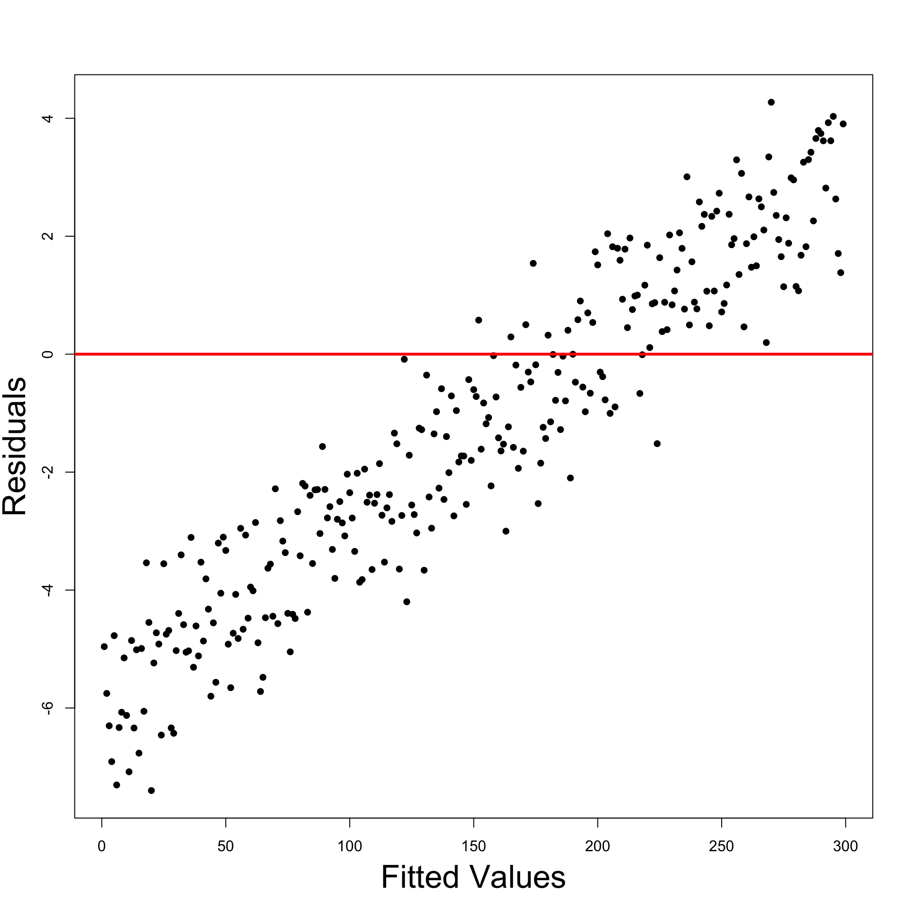Fit linear model
{\rm distance} = \beta_1 + \beta_2 \, {\rm height }
Multiple R-squared: 0.9264, Adjusted R-squared: 0.9116
- The coefficient of correlation is R^2 = 0.9264
- R^2 is quite high, showing that a linear model fits reasonably well
Is a quadratic model better?
{\rm distance} = \beta_1 + \beta_2 \, {\rm height } + \beta_3 \, {\rm height }^2
Note: To specify powers we need to type \,\, \texttt{I}
Multiple R-squared: 0.9903, Adjusted R-squared: 0.9855
- The coefficient of correlation is R^2 = 0.9903
- This is higher than the previous score R^2 = 0.9264
- The quadratic trajectory explains 99\% of variability in the data
Why not try a cubic model?
{\rm distance} = \beta_1 + \beta_2 \, {\rm height } + \beta_3 \, {\rm height }^2 + \beta_4 \, {\rm height }^3
Multiple R-squared: 0.9994, Adjusted R-squared: 0.9987
- The coefficient of correlation is R^2 = 0.9994
- This is higher than the score of quadratic model R^2 = 0.9903
- What is going on?
Quadratic vs cubic
Which model is better: quadratic or cubic?
Let us perform F-test for model selection
Analysis of Variance Table
Model 1: distance ~ height + I(height^2)
Model 2: distance ~ height + I(height^2) + I(height^3)
Res.Df RSS Df Sum of Sq F Pr(>F)
1 4 744.08
2 3 48.25 1 695.82 43.26 0.00715 **Model selection: quadratic Vs cubic
The F-test is significant since p = 0.007 < 0.05
This means we should reject the null hypothesis that
\beta_4 = 0
Therefore the quadratic model does not describe the data well
The underlying relationship from Galileo’s data is cubic and not quadratic
Probably the inclined plane introduced drag
Code can be downloaded here galileo.R
Plot: Quadratic Vs Cubic
Click here to show the full code
# Enter the data
height <- c(100, 200, 300, 450, 600, 800, 1000)
distance <- c(253, 337, 395, 451, 495, 534, 573)
# Scatter plot of data
plot(height, distance, xlab = "", ylab = "", pch = 16, cex = 2)
# Add labels
mtext("Initial height", side = 1, line = 3, cex = 2.1)
mtext("Horizontal distance", side = 2, line = 2.5, cex = 2.1)
# Fit quadratic model
quadratic <- lm(distance ~ height + I( height^2 ))
# Fit cubic model
cubic <- lm(distance ~ height + I( height^2 ) + I (height^3))
# Plot quadratic Vs Cubic
polynomial <- Vectorize(function(x, ps) {
n <- length(ps)
sum(ps*x^(1:n-1))
}, "x")
curve(polynomial(x, coef(quadratic)), add=TRUE, col = "red", lwd = 2)
curve(polynomial(x, coef(cubic)), add=TRUE, col = "blue", lty = 2, lwd = 2)
legend("topleft", legend = c("quadratic", "cubic"),
col = c("red", "blue"), lty = c(1,2), lwd = 2, cex = 2.5)Why not try higher degree polynomials
{\rm distance} = \beta_1 + \beta_2 \, {\rm height } + \beta_3 \, {\rm height }^2 + \beta_4 \, {\rm height }^3 + \beta_5 \, {\rm height }^4
# Fit quartic model
quartic <- lm(distance ~ height + I( height^2 ) + I (height^3)
+ I (height^4))
summary(quartic)
Multiple R-squared: 0.9998, Adjusted R-squared: 0.9995
- We obtain a coefficient R^2 = 0.9998
- This is even higher than cubic model coefficient R^2 = 0.9994
- Is the quartic model actually better?
Model selection: cubic Vs quartic
Analysis of Variance Table
Model 1: distance ~ height + I(height^2) + I(height^3)
Model 2: distance ~ height + I(height^2) + I(height^3) + I(height^4)
Res.Df RSS Df Sum of Sq F Pr(>F)
1 3 48.254
2 2 12.732 1 35.522 5.5799 0.142
The F-test is not significant since p = 0.142 > 0.05
This means we cannot reject the null hypothesis that \beta_5 = 0
The cubic models does better than quartic, despite higher R^2
The underlying relationship from Galileo’s data is indeed cubic!
Example 3: Divorces
- Data from Daily Mirror gives
- Percentage of divorces caused by adultery VS years of marriage
- Original analysis claimed
- Divorce-risk peaks at year 2 then decreases thereafter
- Is this conclusion misleading?
- Does a quadratic model offers a better fit than a straight line model?
Divorces dataset
Percent of divorces caused by adultery by year of marriage
| Years of Marriage | 1 | 2 | 3 | 4 | 5 | 6 | 7 |
|---|---|---|---|---|---|---|---|
| % divorces adultery | 3.51 | 9.50 | 8.91 | 9.35 | 8.18 | 6.43 | 5.31 |
| Years of Marriage | 8 | 9 | 10 | 15 | 20 | 25 | 30 |
|---|---|---|---|---|---|---|---|
| % divorces adultery | 5.07 | 3.65 | 3.80 | 2.83 | 1.51 | 1.27 | 0.49 |
Plot: Years of Marriage Vs Divorce-risk
- Looks like: Divorce-risk is
- First low,
- then peaks at year 2
- then decreases
- Change of trend suggests:
- Higher order model might be good fit
- Consider quadratic model
Click here to show the full code
# Divorces data
year <- c(1, 2, 3, 4, 5, 6,7, 8, 9, 10, 15, 20, 25, 30)
percent <- c(3.51, 9.5, 8.91, 9.35, 8.18, 6.43, 5.31,
5.07, 3.65, 3.8, 2.83, 1.51, 1.27, 0.49)
# Scatter plot of data
plot(year, percent, xlab = "", ylab = "", pch = 16, cex = 2)
# Add labels
mtext("Years of marriage", side = 1, line = 3, cex = 2.1)
mtext("Risk of divorce by adultery", side = 2, line = 2.5, cex = 2.1)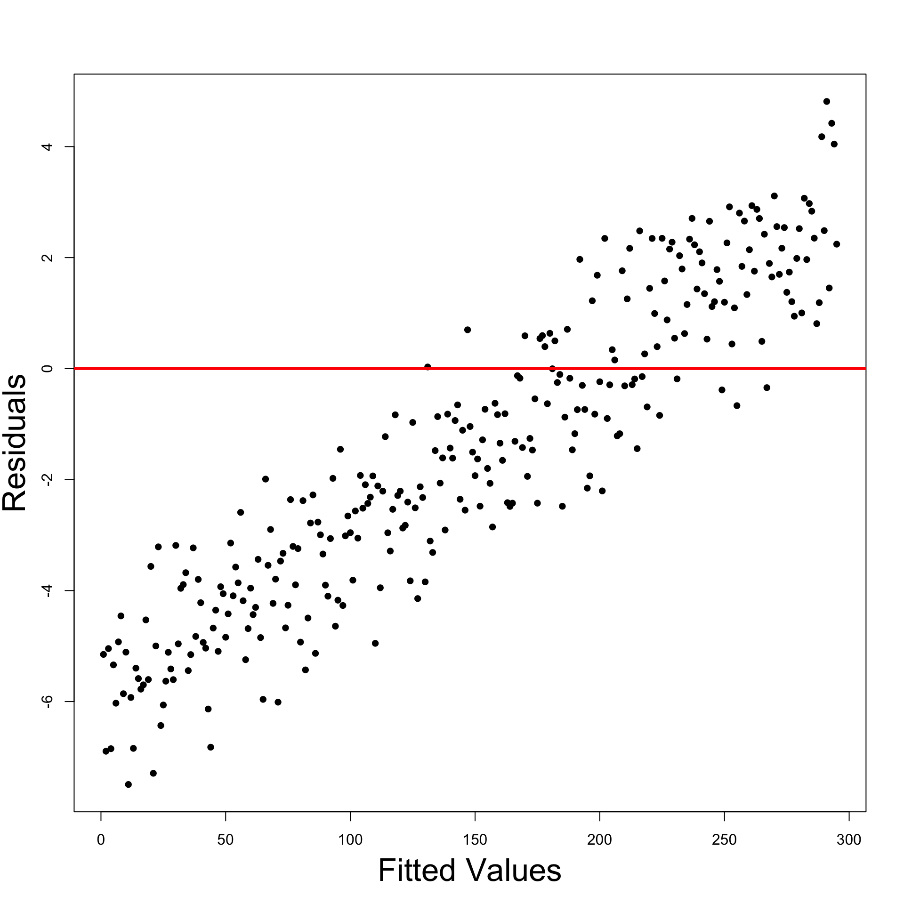
Fitting linear model
# Divorces data
year <- c(1, 2, 3, 4, 5, 6,7, 8, 9, 10, 15, 20, 25, 30)
percent <- c(3.51, 9.5, 8.91, 9.35, 8.18, 6.43, 5.31,
5.07, 3.65, 3.8, 2.83, 1.51, 1.27, 0.49)
# Fit linear model
linear <- lm(percent ~ year)
summary(linear)
Estimate Std. Error t value Pr(>|t|)
(Intercept) 7.88575 0.78667 10.024 3.49e-07 ***
year -0.27993 0.05846 -4.788 0.000442 ***
- t-test for \beta_2 is significant since p = 0.0004 < 0.05
- Therefore \beta_2 \neq 0 and the estimate is \hat \beta_2 = -0.27993
- The risk of divorce decreases with years of marriage (because \hat \beta_2 < 0)
Fitting quadratic model
Linear model offered a reasonable explanation of the divorce data
Is quadratic model better?
Estimate Std. Error t value Pr(>|t|)
(Intercept) 8.751048 1.258038 6.956 2.4e-05 ***
year -0.482252 0.235701 -2.046 0.0654 .
I(year^2) 0.006794 0.007663 0.887 0.3943
t-test for \beta_3 is not significant since p = 0.3943 > 0.05
Cannot reject null hypothesis \beta_3 = 0 \quad \implies \quad Quadratic term not needed!
The original analysis in the Daily Mirror is probably mistaken
Model selection: Linear Vs Quadratic
We concluded that a linear model is better fit
To cross check this result we do F-test for model selection
Model 1: percent ~ year
Model 2: percent ~ year + I(year^2)
Res.Df RSS Df Sum of Sq F Pr(>F)
1 12 42.375
2 11 39.549 1 2.826 0.786 0.3943
- F-test is not significant since p = 0.3943 > 0.05
- We cannot reject the null hypothesis that \beta_3 = 0
- Quadratic model is worse than linear model
Conclusions
- Daily Mirror Claim: Divorce-risk peaks at year 2 then decreases thereafter
- Claim suggests higher order model needed to explain change in trend
- Analysis conducted:
- Fit linear and quadratic regression models
- t-test of significance discarded quadratic term
- F-test for model selection discarded Quadratic model
- Findings: Claims in Daily Mirror are misleading
- Linear model seems to be better than quadratic
- This suggests divorce-risk generally decreases over time
- Peak in year 2 can be explained by unusually low divorce-risk in 1st year
- Code is available here divorces.R
Visual confirmation: Linear model is better and divorce-risk is decreasing
Peak in year 2 should be explained by unusually low divorce-risk in 1st year
Click here to show the full code
# Divorces data
year <- c(1, 2, 3, 4, 5, 6,7, 8, 9, 10, 15, 20, 25, 30)
percent <- c(3.51, 9.5, 8.91, 9.35, 8.18, 6.43, 5.31,
5.07, 3.65, 3.8, 2.83, 1.51, 1.27, 0.49)
# Fit linear model
linear <- lm(percent ~ year)
# Fit quadratic model
quadratic <- lm(percent ~ year + I( year^2 ))
# Scatter plot of data
plot(year, percent, xlab = "", ylab = "", pch = 16, cex = 2)
# Add labels
mtext("Years of marriage", side = 1, line = 3, cex = 2.1)
mtext("Risk of divorce by adultery", side = 2, line = 2.5, cex = 2.1)
# Plot Linear Vs Quadratic
polynomial <- Vectorize(function(x, ps) {
n <- length(ps)
sum(ps*x^(1:n-1))
}, "x")
curve(polynomial(x, coef(linear)), add=TRUE, col = "red", lwd = 2)
curve(polynomial(x, coef(quadratic)), add=TRUE, col = "blue", lty = 2, lwd = 2)
legend("topright", legend = c("Linear", "Quadratic"),
col = c("red", "blue"), lty = c(1,2), cex = 3, lwd = 3)Why not try higher order polynomials
- Let us compare Linear model with Order 6 Model
# Fit order 6 model
order_6 <- lm(percent ~ year + I( year^2 ) + I( year^3 ) +
+ I( year^4 ) + I( year^5 ) +
+ I( year^6 ))
# Model selection
anova(linear, order_6)
Model 1: percent ~ year
Model 2: percent ~ year + I(year^2) + I(year^3) + I(year^4) + I(year^5) +
+I(year^6)
Res.Df RSS Df Sum of Sq F Pr(>F)
1 12 42.375
2 7 3.724 5 38.651 14.531 0.001404 **Why not try higher order polynomials
F-test is significant since p = 0.001 < 0.05
This means we reject the null hypothesis that
\beta_3 = \beta_4 = \beta_5 = \beta_6 = 0
The Order 6 model is better than the Linear model
Peak divorce-rate in Year 2 is well explained by order 6 regression
What is going on? Let us plot the regression functions
- There are more peaks:
- Decreasing risk of divorce for 23 years
- But it gets boring after 27 years!
- Model overfits:
- Data is very well explained
- but predictions are not realistic
- Linear model should be preferred
Click here to show the full code
# Divorces data
year <- c(1, 2, 3, 4, 5, 6,7, 8, 9, 10, 15, 20, 25, 30)
percent <- c(3.51, 9.5, 8.91, 9.35, 8.18, 6.43, 5.31,
5.07, 3.65, 3.8, 2.83, 1.51, 1.27, 0.49)
# Fit linear model
linear <- lm(percent ~ year)
# Fit order 6 model
order_6 <- lm(percent ~ year + I( year^2 ) + I( year^3 ) +
I( year^4 ) + I( year^5 ) +
I( year^6 ))
# Scatter plot of data
plot(year, percent, xlab = "", ylab = "", pch = 16, cex = 2)
# Add labels
mtext("Years of marriage", side = 1, line = 3, cex = 2.1)
mtext("Risk of divorce by adultery", side = 2, line = 2.5, cex = 2.1)
# Plot Linear Vs Quadratic
polynomial <- Vectorize(function(x, ps) {
n <- length(ps)
sum(ps*x^(1:n-1))
}, "x")
curve(polynomial(x, coef(linear)), add=TRUE, col = "red", lwd = 2)
curve(polynomial(x, coef(order_6)), add=TRUE, col = "blue", lty = 2, lwd = 3)
legend("topright", legend = c("Linear", "Order 6"),
col = c("red", "blue"), lty = c(1,2), cex = 3, lwd = 3)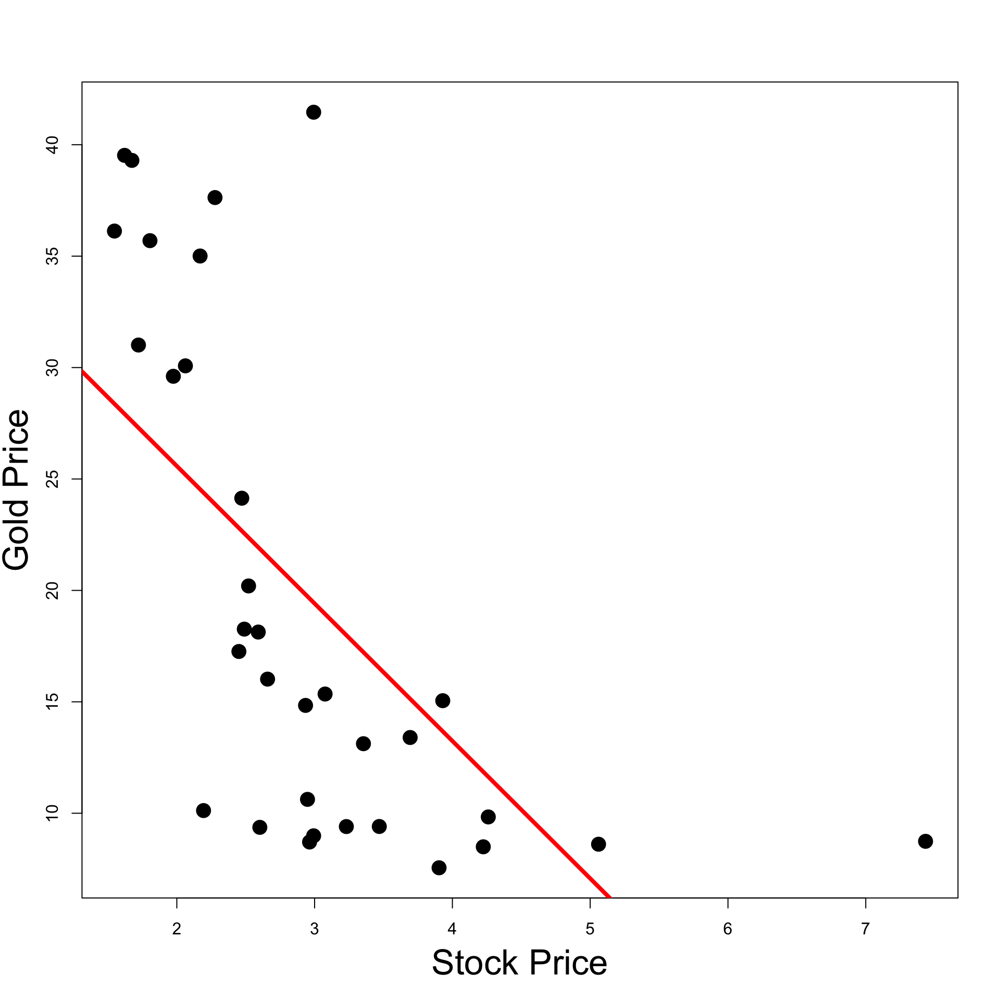
References
[1]
Casella, George, Berger, Roger L., Statistical inference, second edition, Brooks/Cole, 2002.
[2]
DeGroot, Morris H., Schervish, Mark J., Probability and statistics, Fourth Edition, Addison-Wesley, 2012.
[3]
Drake, Stillman, MacLachlan, James, Galileo’s discovery of the parabolic trajectory, Scientific American. 232 (1975) 102–111. http://www.jstor.org/stable/24949756.